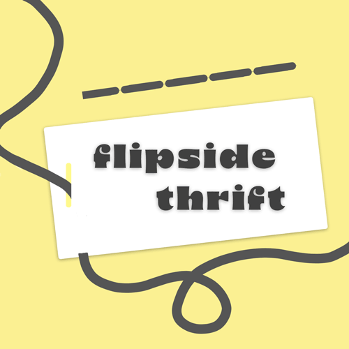
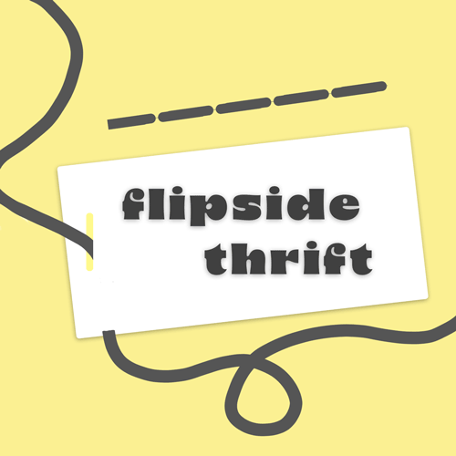

Digital Design: Adobe Illustrator and Photoshop
Using Adobe Illustrator and Photoshop, I have created and designed personal projects and rebrand concepts for local businesses. I aim to create attention-grabbing graphics that reference the past and capture future attention. Below are some examples of my experience creating digital imagery with an eye for detail and concise design.
 
